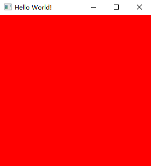

准备工作¶
在开始编写之前，我们需要设置项目。在本教程中，我们使用 Java 19。
在项目的构建脚本中添加依赖库。未来，我们可使用 Customizer 生成依赖库。
同时，由于 FFM API 仍处于预览中，需要在构建脚本中开启预览功能。
// Groovy
project.ext.overrunglVer = "0.1.0"
project.ext.overrunglNatives = "natives-windows"
dependencies {
implementation platform("io.github.over-run:overrungl-bom:$overrunglVer")
implementation "io.github.over-run:overrungl"
implementation "io.github.over-run:overrungl-glfw"
implementation "io.github.over-run:overrungl-opengl"
implementation "io.github.over-run:overrungl-stb"
runtimeOnly "io.github.over-run:overrungl-glfw::$overrungNatives"
runtimeOnly "io.github.over-run:overrungl-stb::$overrungNatives"
}
tasks.withType(JavaCompile).configureEach {
options.compilerArgs += "--enable-preview"
}
// Kotlin DSL Script
val overrunglVer = "0.1.0"
val overrungNatives = "natives-windows"
dependencies {
implementation(platform("io.github.over-run:overrungl-bom:$overrunglVer"))
implementation("io.github.over-run:overrungl")
implementation("io.github.over-run:overrungl-glfw")
implementation("io.github.over-run:overrungl-opengl")
implementation("io.github.over-run:overrungl-stb")
runtimeOnly("io.github.over-run", "overrungl-glfw", classifier = overrungNatives)
runtimeOnly("io.github.over-run", "overrungl-stb", classifier = overrungNatives)
}
tasks.withType < JavaCompile > {
options.compilerArgs.add("--enable-preview")
}
如果你以前使用过 LWJGL，你会注意到一些模块没有使用本机库（Natives Library）。这是因为这些模块使用了系统本机库或使用其他模块进行加载（例如 OpenGL 模块使用 GLFW 模块加载函数），于是我们不用为这些模块构建本机库。
项目加载完成后，使用此示例来创建你的窗口。如果运行成功，你会看到以下红色窗口，如图 1 所示。
|  |
|---|
| 图 1 |